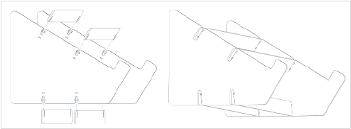
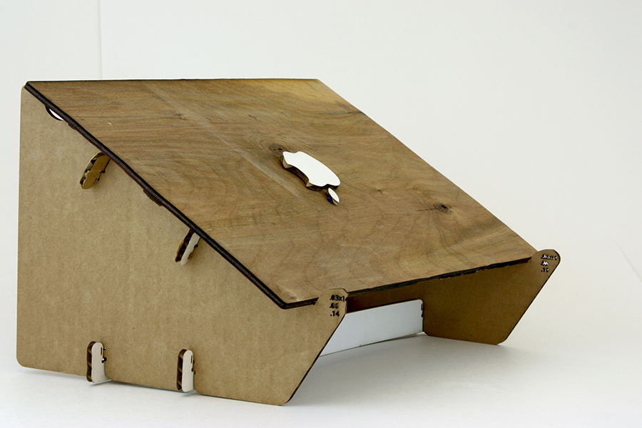
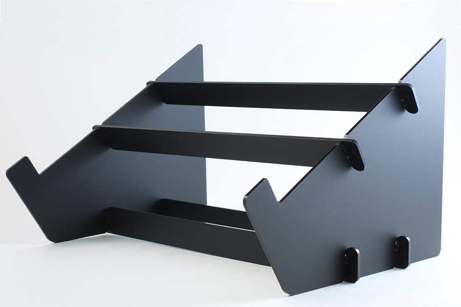
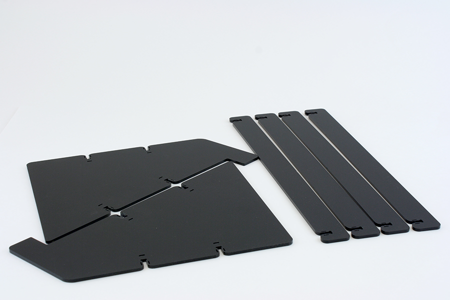
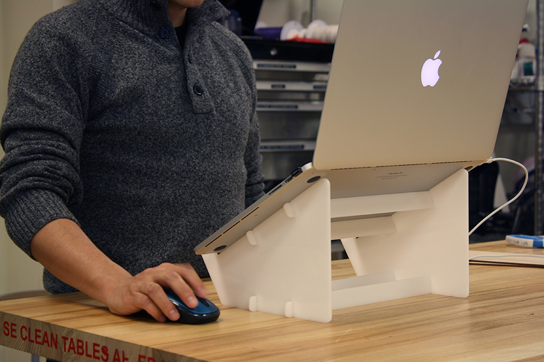

project //
portable laptop stand

occasion/context
prototype engineering internship at Kinoma
target user group
Kinoma employees working at trade shows
secondary user groups
laptop users who want their screen at eye level for various reasons (e.g. workstation setup, watching movies)
problem
At trade shows and other conferences, the team showcases software as well as hardware. For displaying the IDE Kinoma Studio, we wanted a stand that would elevate the laptop to make it easy to see and more polished than a laptop on the table. The stand needed to hold the laptop securely and be able to pack flat for travel.
solution
I designed 5-piece, flat-pack acrylic laptop stand.
insights
With early designs, I listened to qualitative feedback from test subjects and observed the following problems and discomforts:
BRITTLENESS//
the crossbars had a weak point where they were likely to break
DANGER TO SELF//
the pieces had right angles that made it possible to hurt yourself during assembly
DANGER TO LAPTOP//
users feared that the acrylic would scratch their laptops
FLIMSINESS//
users did not want to place their laptops on something they thought was flimsy
"THE MARK"//
when one user opened his laptop with one hand, it slid off the front of the stand
design decisions
With feedback in mind, the following modifications were made
BRITTLENESS//
added relief cuts in the crossbars to distribute the stress
DANGER TO SELF//
radiused the edges
DANGER TO LAPTOP//
added felt to the hard edges of the stand
FLIMSINESS//
added a snap-fit mechanism to allow the two pieces to fit together snugly regardless of exact material thickness.
"THE MARK"//
added little ridges to keep the bottom of the laptop from rolling off of the stand.
collaborators
many members of the CITRIS Invention lab tried versions of the stand and offered feedback. Engineering contributions by Kevin Tian, Chris Myers. Physical brainstorming help from Oscar Segovia, Mark Oehlberg.

early prototype in cardboard and wood

final prototype in matte black acrylic

matte black components ready to be packed flat

user testing final prototype in white as part of a workstation